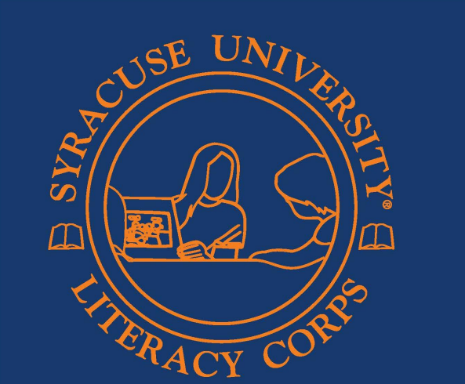

The Syracuse University Literacy Corps program helped me improve the conditions of my community and develop my personal skills, such as leadership, problem solving, collaboration, communication, and conflict management.
I developed my leadership skills through this program. I had to take a position of leadership when working with the students to maintain a productive and inclusive learning environment. For example, I had one student who often had outbursts and would scream or throw objects. This would often distract the other students from completing their work. I would often take a leadership role and turn the students’ attentions away to something else, while another staff member would deal with the student having an outburst. Diverting the students’ attentions away from the upset student would help to keep them focused on the material they are learning opposed to gossiping about the other child. In turn, the student who was having an outburst would not face as much isolation or judgement from their peers, which helps to facilitate a more inclusive learning environment.
One time I had to solve a problem, was when it was pajama day. One of my students, who was already isolated from many of the students due to her language barrier, forgot to bring pajamas for pajama day. She was upset and it was impacting her academic performance and behavior in the classroom. I mentioned this to the teacher I worked under, and she told me I could retrieve pajama pants from a bin of clothes the school provided. I was able to find a pair of pajama pants that were about her size and could see the difference in her behavior in the classroom the rest of the day.
The SULC program puts heavy emphasis on maintaining communication with both the Shaw Center, but also my site supervisors and teachers I work with. I had to communicate with the Shaw Center, my supervisor, and the teachers who I worked with when I was not able to come into the class because I was sick. I also had to communicate with the teachers I worked with when I was concerned about a student's conditions or conflict between two students. After I worked individually with the same two students, I would often give updates to the teacher I worked under. I would communicate where the students needed help and what concepts I thought they were just memorizing rather than understanding. For example, for one of my letter recognition activities, the student had to say the name of the letter, the sound it makes, and identify what image it depicted (ex; B, Bee). I noticed that one of my students would just memorize certain words. For example, she said “R, rat” when the image was of rain. I communicated to the teacher that she might not be fully grasping the concept but instead just memorizing the cards.
